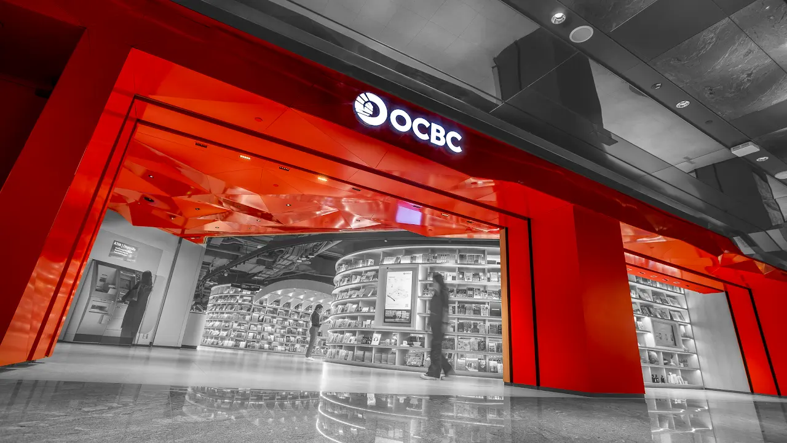
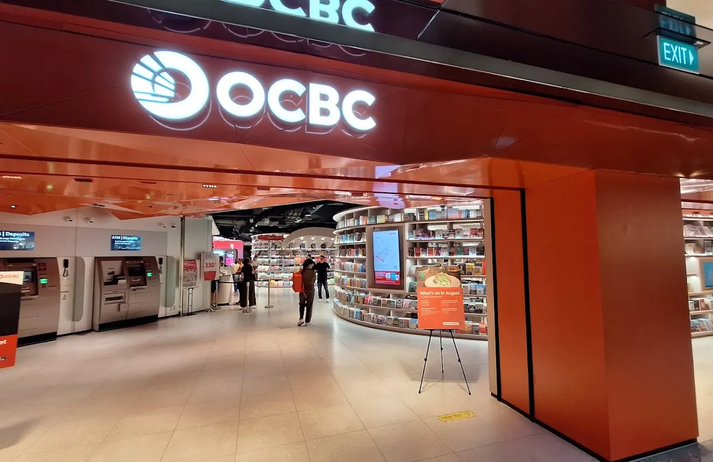
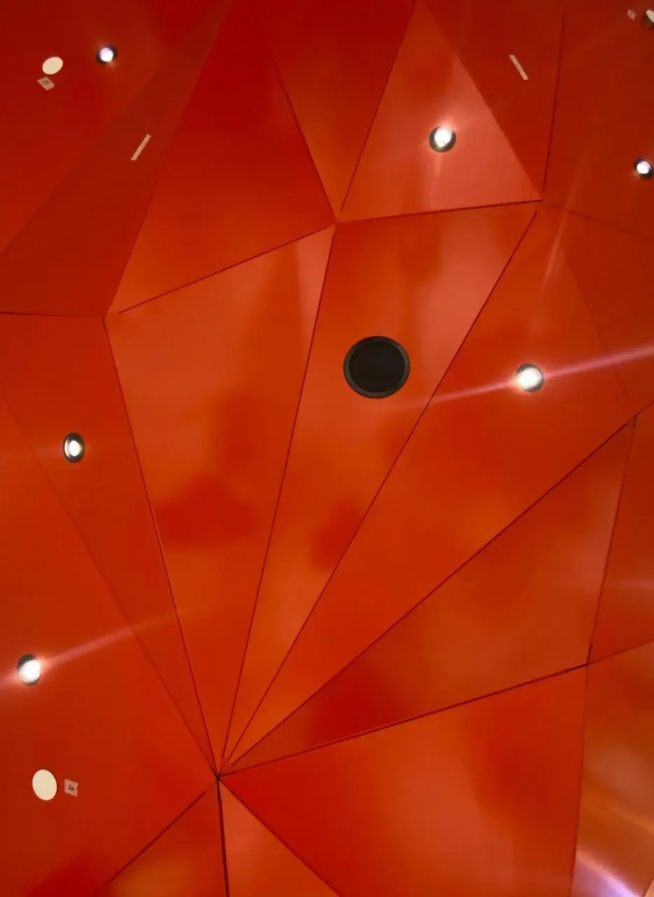
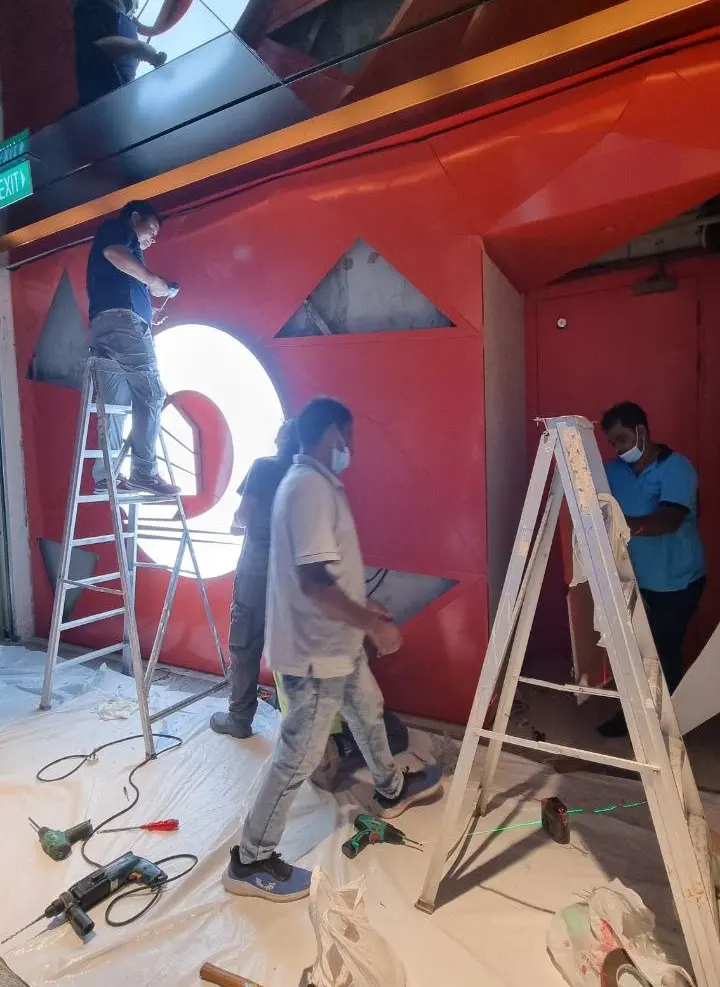
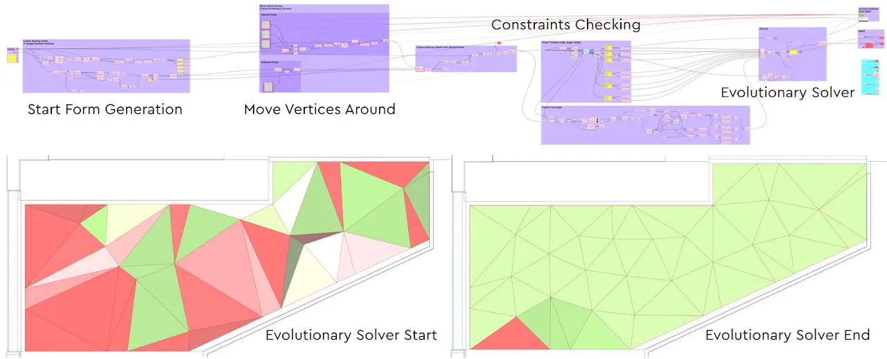

← all workarchitecture
OCBC Faceted Ceiling

- context
- Superstructure
- year
- 2023
- type
- architecture
The OCBC Lifestyle Banking Center opened in Wisma Atria shopping mall in 2022, in the heart of Singapore’s Orchard Road shopping belt. OCBC seeks to redefine banking by connecting with its customers even as digital banking continues to grow.
In Superstructure, I was tasked to create the shopfront and ATM area ceiling for this flagship branch. Following OCBC’s branding and design guides, we decided to echo the triangulated features into the physical world by creating an undulating triangular faceted wall and ceiling feature that flowed throughout the shopfront and into the shop itself.
To meet the client's demands, the surface was computationally generated using a multi optimisation solver in grasshopper rhino. The panels were then custom plasma cut indiviudually, then the tabs were machine bent to specific angles determined from the grasshopper script, and then brought on site and bolted together, which achieved the undulating effect.






